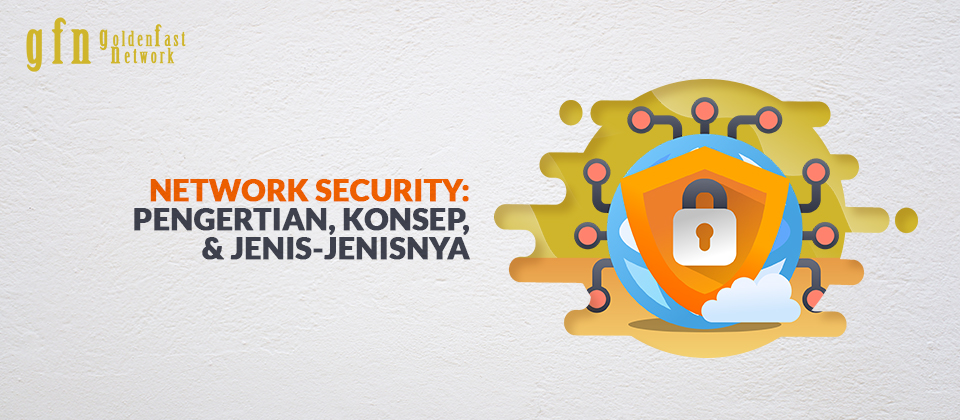

|
| Home | Daftar Materi | MateriKeamanan jaringan (Network security)1.Keamanan jaringanKeamanan jaringan terdiri dari kebijakan dan praktik yang diterapkan untuk mencegah dan memantau akses yang tidak sah, penyalahgunaan, modifikasi, atau penolakan jaringan komputer dan sumber daya yang dapat diakses jaringan. Keamanan jaringan melibatkan otorisasi akses ke data dalam jaringan, yang dikendalikan oleh administrator jaringan. Pengguna memilih atau diberi ID dan kata sandi atau informasi otentikasi lainnya yang memungkinkan mereka mengakses informasi dan program dalam otoritas mereka. Keamanan jaringan mencakup berbagai jaringan komputer, baik publik maupun swasta, yang digunakan dalam pekerjaan sehari-hari: melakukan transaksi dan komunikasi antara bisnis, lembaga pemerintah, dan individu. Jaringan dapat bersifat pribadi, seperti di dalam perusahaan, dan lainnya yang mungkin terbuka untuk akses publik. Keamanan jaringan terlibat dalam organisasi, perusahaan, dan jenis lembaga lainnya. Itu sesuai dengan judulnya: mengamankan jaringan, serta melindungi dan mengawasi operasi yang sedang dilakukan. Cara paling umum dan sederhana untuk melindungi sumber daya jaringan adalah dengan memberinya nama unik dan kata sandi yang sesuai. 2.Konsep keamanan jaringanKeamanan jaringan dimulai dengan otentikasi, biasanya dengan nama pengguna dan kata sandi. Karena ini hanya memerlukan satu detail yang mengautentikasi nama pengguna — mis., Kata sandi — ini terkadang disebut otentikasi satu faktor. Dengan otentikasi dua faktor, sesuatu yang 'dimiliki' pengguna juga digunakan (misalnya, token keamanan atau 'dongle', kartu ATM, atau ponsel); dan dengan otentikasi tiga faktor, sesuatu yang 'dimiliki' pengguna juga digunakan (misalnya, sidik jari atau pemindaian retina). Setelah diautentikasi, firewall memberlakukan kebijakan akses seperti layanan apa yang diizinkan untuk diakses oleh pengguna jaringan. Meskipun efektif untuk mencegah akses yang tidak sah, komponen ini mungkin gagal memeriksa konten yang berpotensi berbahaya seperti worm komputer atau Trojan yang dikirim melalui jaringan. Perangkat lunak anti-virus atau sistem pencegahan intrusi (IPS) membantu mendeteksi dan menghambat tindakan malware tersebut. Sistem deteksi intrusi berbasis anomali juga dapat memantau jaringan seperti lalu lintas wireshark dan dapat dicatat untuk tujuan audit dan untuk analisis tingkat tinggi selanjutnya. Sistem yang lebih baru yang menggabungkan machine learning tanpa pengawasan dengan analisis lalu lintas jaringan lengkap dapat mendeteksi penyerang jaringan aktif dari orang dalam yang berniat jahat atau penyerang eksternal yang ditargetkan yang telah menyusupi mesin atau akun pengguna. Komunikasi antara dua host menggunakan jaringan dapat dienkripsi untuk menjaga privasi. Honeypots, yang pada dasarnya memikat sumber daya yang dapat diakses jaringan, dapat digunakan dalam jaringan sebagai alat pengawasan dan peringatan dini, karena honeypots biasanya tidak diakses untuk tujuan yang sah. Teknik yang digunakan oleh penyerang yang mencoba untuk mengkompromikan sumber daya umpan ini dipelajari selama dan setelah serangan untuk mengawasi teknik eksploitasi baru. Analisis tersebut dapat digunakan untuk lebih memperketat keamanan jaringan sebenarnya yang dilindungi oleh honeypot. Honeypot juga dapat mengarahkan perhatian penyerang dari server yang sah. Honeypot mendorong penyerang untuk menghabiskan waktu dan energi mereka di server umpan sambil mengalihkan perhatian mereka dari data di server sebenarnya. Mirip dengan honeypot, honeynet adalah jaringan yang disiapkan dengan kerentanan yang disengaja. Tujuannya juga untuk mengundang serangan sehingga metode penyerang dapat dipelajari dan informasi dapat digunakan untuk meningkatkan keamanan jaringan. Sebuah honeynet biasanya mengandung satu atau lebih honeypots. 3.Segi-segi keamanan
|
| Computer Network | ||
| IP Address | ||
| Network Hardware | ||
| Topology | ||
| Network Protocol | ||
| LAN | ||
| WAN | ||
| Network Security | ||
| Web Technologi |